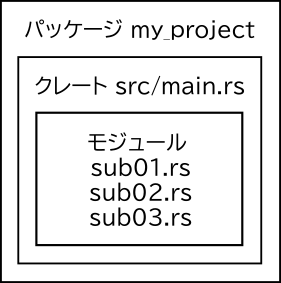
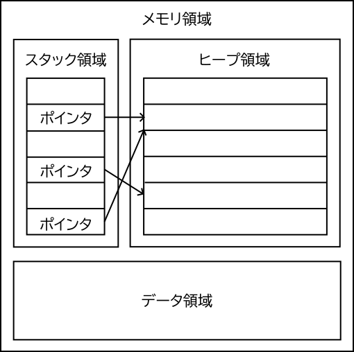
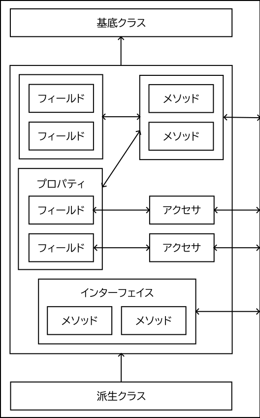

はじめに
Windowsでプログラムを作成する方法を紹介します。
プログラミング言語
プログラムを書くために使用する言語、いわゆるプログラミング言語はたくさん存在します。それらのプログラミング言語は、開発の用途や言語の適性によって使い分けられます。
以下に掲載するコードはRustというプログラミング言語で記述されています。RustはCおよびC++の後継として期待されている比較的新しいプログラミング言語です。CやC++よりも安全性が高く、CやC++と同じくらい高速なプログラムを作成できます。RustはCやC++と同様、システムソフトウェアの開発に適したプログラミング言語です。システムソフトウェアとはコンピュータのハードウェアを直接操作するようなプログラムのことです。Windowsのデスクトップで動作するようなアプリケーションソフトウェアの開発にはJavaやC#などのプログラミング言語が向いています。
プログラムを作成するにはプログラムのソースコードを編集するためのコードエディタや、ソースファイルから実行ファイルを生成するためのビルドツールなどが必要です。プログラムを作成するために必要なプログラムを総称してツールチェーンといいます。デスクトップアプリケーションを作成するにはGUIツールキットとGUIビルダも必要です。
開発環境の構築
WindowsターミナルからPowerShellを起動してください。
ツールチェーンとしてRustupおよびVisual Studio、コードエディタとしてVisual Studio Code(以下VS Code)1、デバッガ(後述)としてLLDBをインストールします。Visual Studio Installerが起動したら[個別のコンポーネント]から[x64/x86 用 MSVC ビルドツール]および[Windows 11 SDK]をチェックして[変更]をクリックします。
$ winget install Rustlang.Rustup Microsoft.VisualStudio.Community Microsoft.VisualStudioCode LLVM.LLVM
$ rustup toolchain install stable-x86_64-pc-windows-msvc
$ rustup default stable-x86_64-pc-windows-msvc- VS Codeを起動します。
- 左側の[拡張機能]から拡張機能としてrust-analyzer/CodeLLDBをインストールします。
- 左側の[エクスプローラー]から以降の作業で作成されるプロジェクトのフォルダをワークスペースに追加します。
プログラムの作成および実行
細かい理屈は後回しにして簡単なプログラムを作って動かしてみましょう。
ホームフォルダにプロジェクトhelloを作成します。Rustではプロジェクトのことをパッケージといいます。
$ cd ~
$ cargo new helloパッケージのフォルダ~/helloが作成されて、~/hello/srcにソースファイルmain.rsが生成されます。
fn main() {
println!("Hello, world!");
}main.rsを実行します。“Hello, world!“と表示されたら成功です。
$ cd hello
$ cargo run -qプログラムの実行ファイルは~/hello/target/debugにhelloとして作成されます。実行ファイルを直接実行することもできます。
$ ~/hello/target/debug/helloソースファイルから実行ファイルを生成する処理をビルドといいます。上記で使用したcargoはRustのビルドツールです。
次はウィンドウを表示してみましょう。
$ cd ~
$ cargo new window~/window/src/main.rsを以下のように書き換えます。
use eframe::{egui, CreationContext, Frame, NativeOptions};
struct MyEguiApp {
counter: u32,
}
impl Default for MyEguiApp {
fn default() -> Self { Self { counter: 0 } }
}
impl MyEguiApp {
fn new(_cc: &CreationContext<'_>) -> Self {
Self::default()
}
}
impl eframe::App for MyEguiApp {
fn ui(&mut self, ui: &mut egui::Ui, _frame: &mut Frame) {
egui::CentralPanel::default().show_inside(ui, |ui| {
ui.heading("Hello World!");
if ui.button("Increment").clicked() {
self.counter = self.counter.wrapping_add(1);
}
ui.label(format!("Counter: {}", self.counter));
});
}
}
fn main() {
let native_options = NativeOptions::default();
eframe::run_native(
"My egui App",
native_options,
Box::new(|cc| Ok(Box::new(MyEguiApp::new(cc)))),
);
}パッケージにGUIツールキットのeframeを追加してmain.rsを実行します。ウィンドウが表示されたら成功です。
$ cd window
$ cargo add eframe
$ cargo run -qcargoにはパッケージマネージャとしての機能もあり、create.ioに公開されているクレートを追加できます。
プログラムのデバッグ
プログラムの不具合をバグ(bug)といい、バグを取り除くことをデバッグ(debug)といいます。デバッグするためのツールがデバッガです。
- VS Codeを起動します。
- 左側の[エクスプローラー]からパッケージのフォルダをワークスペースに追加します。
- 左側の[実行とデバッグ]から[launch.jsonファイルを作成します]をクリックします。
- 表示されたリストからパッケージのフォルダを選択します。
- ソースファイルを開いて行番号左側をクリックしてブレークポイントをセットします。
- F5を押すとデバッガが起動し、ブレークポイントの位置でプログラムが停止します。
プログラムのエラーにはビルドエラー、実行時エラーおよび論理エラーの3つがあります。ビルドエラーはビルド時に発生するエラーです。ビルドエラーを解消しないとプログラムを実行できません。実行時エラーはプログラムの実行中に発生するエラーです。実行時エラーを解消しないとプログラムが強制終了します。論理エラーは、プログラムの動作に支障はないものの期待した結果が得られないエラーです。3つのエラーの中でこの論理エラーが一番厄介です。
プロジェクトの構成
以下のようにすると新規プロジェクトmy_projectが作成され、プロジェクトを構成するファイルを収納したフォルダmy_projectがカレントフォルダに生成されます。
$ cargo new my_projectフォルダmy_projectのルートにプロジェクトの設定ファイルCargo.tomlが置かれます。ソースファイルはサブフォルダsrcに置かれます。src/main.rsがプログラムのエントリーポイントになり、このファイルに記述されたコードが最初に実行されます。
my_project/
├── Cargo.toml
└── src/
└── main.rsRustではプロジェクトのことをパッケージといい、プロジェクトが生成する実行ファイルおよび実行ファイルのもとになるソースファイルをクレートといいます。ソースファイルはモジュールとして複数のファイルに分割できます。src/main.rsが最上位のモジュール(ルートモジュール)になります。モジュールに分割したsrc/main.rsは次のようなファイル・フォルダ構成になります。
src/
├── main.rs
├── sub01.rs
├── sub02.rs
├── sub03.rs
└── sub03/
└── subsub01.rs
└── subsub02.rsモジュールの詳細についてはまくまく Rust ノートを参照してください。以下の記事も参考になります。

メモリ領域
Rustのコードを読み書きするにあたって、変数のデータがコンピュータのメモリ上のどこに置かれているのかをイメージできるようにしておきましょう。メモリ領域はスタック領域・ヒープ領域・データ領域の3つに大きく分けられます。各領域は以下のように使い分けられます。
- スタック領域には小さくて生存期間の短い変数のデータが置かれます。
- ヒープ領域には大きくてサイズが可変もしくは実行時にサイズが決まる変数のデータが置かれます。
- データ領域にはプログラム全体で共有する長期にわたって必要な変数のデータが置かれます。
プログラムの実行中に変数が作成されると、スタック領域にそのデータが置かれます。プログラムの処理が変数のスコープ(有効範囲)から外れると、そのデータがスタック領域から取り除かれます。スタック領域のデータは、最後に置かれたものから順番に削除され、最初に置かれたものが最後に削除されます。ヒープ領域のデータにはスタック領域のポインタからアクセスします。ポインタはヒープ領域に置かれているデータを参照するものです。スタック領域には大きなデータが置けないのでこのような仕組みになっています。ヒープ領域のデータはどこからも参照されなくなると消滅します。データ領域のデータはプログラムが終了するまで有効です。

オブジェクト指向
オブジェクト指向について簡単に説明します。オブジェクトは、ひとまとまりのデータとそれらのデータを扱う処理をひとまとめにしたものです。
構造体はメンバとして型の異なる複数の変数を持つことができますが、クラスはメンバとして関数を持てるように構造体を拡張したものです。クラスのメンバ変数を「フィールド」、クラスのメンバ関数を「メソッド」、クラス型の変数を「オブジェクト」といいます。クラスを変数として実体化することを「インスタンス化」、オブジェクトのインターフェイスのみを公開して実装を非公開にすることを「カプセル化」といいます。オブジェクトのフィールドはメソッドを介して参照・操作します。フィールドを直接参照したり操作したりすることは一般的ではありません。フィールドにアクセスするためのメソッドをアクセサといい、アクセサでアクセスできるフィールドを「プロパティ」といいます。
インターフェイスは、クラスが特定のメソッドを持つように規定するものです。異なるクラス型を同じインターフェイスにして共通化できます。派生クラスは文字通りあるクラスから派生したクラスです。派生元のクラスを基底クラスといい、派生クラスは基底クラスのメンバをすべて継承します。型パラメータによってクラスや関数はいろいろな型のデータを受け取ることができます。基底クラスと派生クラスのオブジェクトが同名のメソッドを持っていた場合でも、実行時にオブジェクトのクラス型に応じてメソッドを呼び分けてくれます。このようなプログラムの汎用性を多態性(ポリモーフィズム)といいます。これによってプログラムの保守性・拡張性・移植性を高めることができます。

RustはC++のような純粋なオブジェクト指向ではありませんが、実用的なオブジェクト指向になっています。その特徴は以下のとおり。
- クラスの機能はないが構造体に関数を持たせることが可能
- インターフェイスではなくトレイトという仕組みでクラスを共通化
- 継承は不可(トレイトの継承は可能)
- 型パラメータは使用可能
- 型パラメータに特定のトレイトを持つ型を指定可能(トレイト境界)
- トレイトオブジェクト(実行時に型が決まるオブジェクト)によって型に応じたメソッドの呼び分けが可能
Rustのオブジェクト指向については以下の記事が参考になります。
C++とRust
Rustの仕様はかなり厳格で、C++などの言語と比べるとかなり異質に感じられますが、その厳格な仕様にしたがってさえいれば、つまらないミスでプログラムがクラッシュすることはほとんどありません。この厳格な仕様によってプログラムの安全性が担保されています。
C++とRustは習得するのが難しい言語だと言われます。しかし、ここで取り上げたメモリ領域とオブジェクト指向についての基本的な知識があれば、覚えることはたくさんありますがそれほど難しくはないと思います。C++を先に習得して、C++との違いを意識しながらRustを習得するのが望ましいかもしれませんが、いきなりRustを学ぶことも悪いことではありません。
-
VS Codeをポータブルアプリケーションとしてインストールしたいなら、VS Codeの公式サイトからアーカイブ(*.zip)をダウンロードしてください。インストールフォルダにdataという名前のフォルダを作成するとポータブルアプリケーションとして機能します。 ↩︎